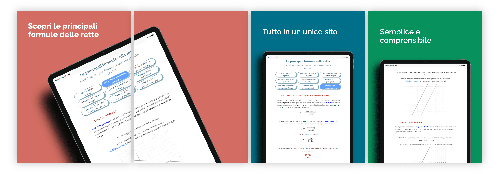

Sono Paolo Larosa!
Sono uno studente al quarto anno dell'indirizzo informatico dell'ITET Rapisardi Da Vinci di Caltanissetta e sono un grande appassionato della programmazione e della tecnologia, soprattutto dello sviluppo di software, dell'analisi di dati e dello sviluppo web. Mi piace molto scrivere in Python per la sua alta elasticità e varietà di librerie utilizzabili, anche se in questo periodo sto sfruttando molto il mio tempo approfondendo JavaScript attraverso NodeJS ed Electron, oltre a aver incominciato a studiare Rust e il toolkit Tauri; ho inoltre partecipato alle OII del 2022 e del 2023 (Olimpiadi Italiane di Informatica), che mi hanno portato a frequentare un corso intermedio riguardo l'utilizzo di C++ in ambito scientifico. Attualmente so utilizzare a livello intermedio-avanzato Python, mentre a livello intermedio C++, Java, CSS, JS e la il db no-SQL di Firebase, nonché MySQL; a livello base, invece, so utilizzare PHP e Dart. Parlando di di microcontrollori, conosco a livello intermedio Arduino e a livello base la scheda ESP8266, nonchè la board STM32 Nucleo. A livello linguistico, posseggo una certificazione Oxford di livello B2, conseguita ad inizio estate di quest'anno; inoltre, posseggo una conoscenza base della lingua francese.
Esperienze
Tech Dgit Easy (TDE)
Da poco prima dell'inizio dell'estate del 2022 ad oggi, ho iniziato a collaborare attivamente con un'azienda di ricerca e sviluppo, insieme al mio compagno @Matteo; per questa azienda abbiamo sviluppato applicazioni in Flutter insieme ad un gestionale web e ad un crawler di strutture Airbnb e Booking per una piattaforma di prenotazioni di alloggi. Durante questa mia esperienza, ancora in corso, ho ampliato diverse soft skills, tra cui la capacità di lavorare in team e di risolvere i diversi problemi a livello di ottimizzazione e di bug fixing. A livello di studio, ho avuto la possibilità di approfondire molte conoscenze in ambito di programmazione! Tra queste, ho potuto imparare a sviluppare applicazioni cross-platform con Flutter, a lavorare con il framework Laravel e a gestire databases MySQL, oltre a migliorare le mie già pregresse conoscenze di Python e del web development in generale.
STM di Catania
Verso la fine di Novembre del 2022 ho avuto la fortuna di poter andare alla STM di Catania, per partecipare ad un corso di 4 giorni riguardante il mondo dell'IoT e dell'automazione, grazie all'utilizzo di board STM32 Nucleo. Durante questo corso, ho potuto approfondire le mie conoscenze in ambito di programmazione, nonchè di hardware e di prototipazione. Durante questo corso, inoltre, ho avuto la possibilità di conoscere il mondo dell'intelligenza artificiale, grazie all'utilizzo di TensorFlow e di Python nello sviluppo di un sistema di classificazione di immagini tramite Deep Learning. Questa visita ha inoltre stimolato a me e al mio compagno @Matteo a iscriverci al concorso Costruiamo il futuro con STM32, del quale abbiamo passato la prima fase; adesso stiamo sviluppando il progetto che abbiamo proposto, in attesa della seconda fase.
PON STEM Project 4.0
Ho avuto la possibilità di partecipare ad un PON riguardante il mondo dell'IoT e dell'automazione, dove ho approfondito al meglio le mie conoscenze riguardo arduino e la programmazione di un modulo ESP32, oltre a conoscere diverse nuove librerie il servizio Arduino IoT Cloud. Infine, ho potuto conoscere la stampa su PCB grazie all'utilizzo del cloruro ferrico.
PON Thinkering Zone
Durante questo PON, ho potuto conoscere il mondo della stampa 3D a filamento, oltre ad imparare a programmare, mediante l'utilizzo di Python, un drone. Inoltre, ho potuto conoscere il mondo dei KIT Lego fatti in collaborazione con Arduino, grazie alla realizzazione di un veicolo intelligente programmabile tramite l'ambiente di sviluppo Arduino.
Corso sulla modellazione 3D
Un corso durato diverse lezioni durante le quali ho imparato a modellare oggetti in 3 dimensioni facendo uso del sotware proprietario Autodesk Fusion 360. Durante questo corso ho conosciuto le basi della modellazione 3D, arrivando a modellare oggetti abbastanza complessi.
O.I.I
Ho partecipato alle O.I.I. per 2 volte; ciò mi ha permesso di approfondire il mondo dell'informatica a livello algorithmico, grazie ad un corso intermedio offertoci dall'università della Luiss. Grazie ad esso ho potuto affinare le mie capacità di problem-solving, una soft skill molto importante quando si parla di programmazione.
I miei progetti
Mente Cartesiana
 Un sito che permette di conoscere le principali formule delle rette sul piano cartesiano. Esso è stato sviluppato con l'ausilio del framework Bootstrap e di una libreria Javascript di funzioni matematiche, oltre all'ovvia partecipazione di CSS e HTML; l'appoggio principale lato design è stato dato però dal software proprietario Bootstrap Studio. Il sito è un progetto scolastico, ma chiunque può beneficiarne per il suo personale studio delle rette. GitHub.
Zip Cracker
Un semplicissimo programma in Python che, sfruttando le potenzialità della libreria zipfile, permette di provare ripetutamente una serie di password ricavate da una lista esterna (come il file RockYou) fino a quando non trova quella corretta. Il progetto è molto semplice, infatti non implementa una generazione continua di password, ma bensì si appoggia ad una lista preconfigurata. GitHub.
Discord Bot
Un bot per la famosa piattaforma di VoIp e di messaggistica che manda nuovi messaggi quando avvengono delle determinate condizioni; quando entra una nuova persona all'interno di un canale, ad esempio, il bot le dà il benvenuto, mentre quando una persona esce, il bot la saluta. Questo progetto è stato sviluppato completamente in Python, con l'ausilio della libreria ufficiale Discord.py.